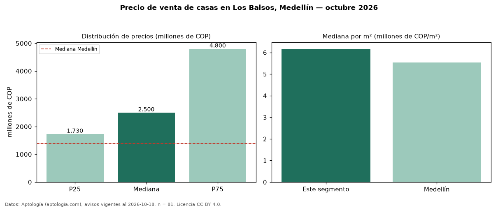

Precio de venta de casas en Los Balsos, Medellín — octubre 2026
COP 2,50 mil millones es el precio mediano de casas en venta en Los Balsos, Medellín (n = 81 avisos). Frente a la mediana de Medellín para casas (COP 1,39 mil millones), queda 80 % por encima. Por metro cuadrado, la mediana es COP 6,17 millones/m² (n = 78 avisos con área), 12 % por encima de Medellín (COP 5,53 millones/m²). Con el precio por m² de arriendo del mismo segmento (COP 40.000/m² al mes), la rentabilidad bruta implícita es 7,8 % anual (aproximación con medianas de ofertas distintas). La mitad central de los avisos va de COP 1,73 mil millones a COP 4,80 mil millones (razón 2,8), una dispersión alta. El área mediana anunciada es 400 m². El segmento con más oferta es el de 3 o más habitaciones (80 avisos, mediana COP 2,60 mil millones). La administración mediana declarada es COP 1,30 millones al mes (n = 54). Datos: Aptología (aptologia.com), CC BY 4.0 — https://www.aptologia.com/casas-en-venta/medellin/los-balsos. Archivos: PDF, CSV con las cifras y gráfica PNG.

| Avisos únicos | 81 |
|---|---|
| Percentil 25 | COP 1.730.000.000 |
| Mediana | COP 2.500.000.000 |
| Percentil 75 | COP 4.800.000.000 |
| Mediana por m² | COP 6.168.763 |
Fuente: avisos vigentes de portales inmobiliarios recopilados por Aptología, deduplicados (mínimo 30 avisos únicos por celda). Precios pedidos, no cerrados. Fecha: 2026-10-18.